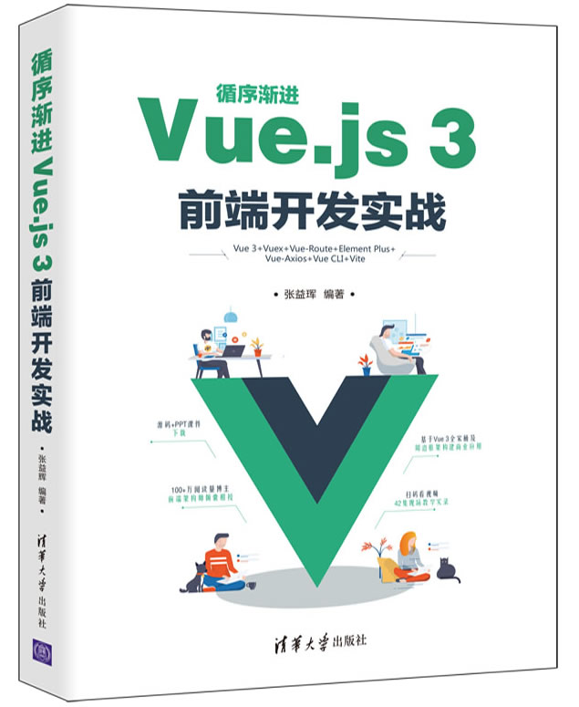

首页 > 书籍下载
《循序渐进Vue.js 3前端开发实战》PDF下载（高清完整版）
|  | 作者：张益珲 |
| 出版时间：2021年12月01日 | |
| 出版社：清华大学出版社 | |
| ISBN：9787302595656 | |
| 总页数：322 | |
| 总字数：53.8W |
这本书比较偏重于商业开发，它构建了一个比较全面的知识体系，并整合了常用的周边框架。这本书的作者叫张益珲，他是一个小有名气的 Web 前端大佬，发布了 400+ 篇技术博客，总阅读量超过 100W。
这里提供的是《循序渐进Vue.js 3前端开发实战》的高清 PDF 下载，内容完整，附带目录标签。
本书作者从一个拥有多年前端开发经验的“老司机”角度，详细介绍了前端框架 Vue.js 3 的新特性、各项功能及其在商业开发中的应用。不管是作为一个初学者，还是正在从事前端工作的开发人员，都值得抽出时间来阅读。
我记得有位初学者是这样评价它的：
本书详细介绍了 Web 前端开发中的各种实现方法、编码风格以及当前主流的前端框架 Vue.js，是 Web 前端开发人员快速入门的好书，讲解的内容也由浅到深，很好理解。
还有一个读者是这样说的：
这本书通俗易懂地讲解了 Vue.js 在实际开发中的具体应用，非常容易理解，小白也能看得懂。
作为一个有几年工作经验的前端开发人员，我建议初学者可以结合视频课程，再对照代码进行剖析，这样才更有利于我们快速的学习和掌握。
书籍目录
- 第1章 从前端基础到Vue.js 3
- 1.1 前端技术演进
- 1.2 HTML入门
- 1.3 CSS入门
- 1.4 JavaScript入门
- 1.5 渐进式开发框架Vue
- 1.6 小结与练习
- 第2章 Vue模板应用
- 2.1 模板基础
- 2.2 条 件 渲 染
- 2.3 循 环 渲 染
- 2.4 范例：实现待办任务列表应用
- 2.5 小结与练习
- 第3章 Vue组件的属性和方法
- 3.1 属性与方法基础
- 3.2 计算属性和侦听器
- 3.3 进行函数限流
- 3.4 表单数据的双向绑定
- 3.5 样 式 绑 定
- 3.6 范例：实现一个功能完整的用户注册页面
- 3.7 小结与练习
- 第4章 处理用户交互
- 4.1 事件的监听与处理
- 4.2 Vue中的事件类型
- 4.3 范例1：随鼠标移动的小球
- 4.4 范例2：弹球游戏
- 4.5 小结与练习
- 第5章 组件基础
- 5.1 关于Vue应用与组件
- 5.2 组件中的数据与事件的传递
- 5.3 自定义组件的插槽
- 5.4 动态组件的简单应用
- 5.5 范例：开发一款小巧的开关按钮组件
- 5.6 小结与练习
- 第6章 组件进阶
- 6.1 组件的生命周期与高级配置
- 6.2 组件Props属性的高级用法
- 6.3 组件Mixin技术
- 6.4 使用自定义指令
- 6.5 使用组件的Teleport功能开发全局弹窗
- 6.6 小结与练习
- 第7章 Vue响应式编程
- 7.1 响应式编程的原理及在Vue中的应用
- 7.2 响应式的计算与监听
- 7.3 组合式API的应用
- 7.4 范例：实现支持搜索和筛选的用户列表
- 7.5 小结与练习
- 第8章 动画
- 8.1 使用CSS3创建动画
- 8.2 使用JavaScript的方式实现动画效果
- 8.3 Vue过渡动画
- 8.4 范例：优化用户列表页面
- 8.5 小结与练习
- 第9章 构建工具Vue CLI的使用
- 9.1 Vue CLI工具入门
- 9.2 Vue CLI项目模板工程
- 9.3 在项目中使用依赖
- 9.4 工程构建
- 9.5 新一代前端构建工具Vite
- 9.6 小结与练习
- 第10章 基于Vue 3的UI组件库——Element Plus
- 10.1 Element Plus入门
- 10.2 表单类组件
- 10.3 开关与滑块组件
- 10.4 选择器组件
- 10.5 提示类组件
- 10.6 数据承载相关组件
- 10.7 实战：实现一个教务系统学生列表页面
- 10.8 小结与练习
- 第11章 基于Vue的网络框架——vue-axios的应用
- 11.1 使用vue-axios请求天气数据
- 11.2 vue-axios实用功能介绍
- 11.3 范例：实现一个天气预报应用
- 11.4 小结与练习
- 第12章 Vue路由管理
- 12.1 Vue Router的安装与简单使用
- 12.2 带参数的动态路由
- 12.3 页面导航
- 12.4 关于路由的命名
- 12.5 关于路由传参
- 12.6 路由导航守卫
- 12.7 动态路由
- 12.8 小结与练习
- 第13章 Vue状态管理
- 13.1 认识Vuex框架
- 13.2 Vuex中的一些核心概念
- 13.3 小结与练习
- 第14章 项目演练一：开发一个文档学习网站
- 14.1 网站框架的搭建
- 14.2 配置专题与文章目录
- 14.3 渲染文章笔记内容
- 14.4 小结与练习
- 第15章 项目演练二：电商后台管理系统实战
- 15.1 用户登录模块开发
- 15.2 项目主页搭建
- 15.3 订单管理模块的开发
- 15.4 商品管理模块的开发
- 15.5 店长管理模块的开发
- 15.6 财务管理与数据统计功能模块开发
- 15.7 小结与练习
书籍下载
一键登录，免费下载完整版 PDF，文件名称：《循序渐进Vue.js 3前端开发实战》.pdf